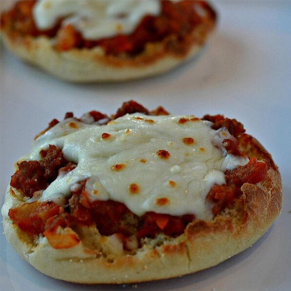

English Muffin Pizza
Description
Fun little pizzas that are great for a quick meal or for a snack, kids birthdays, or parties. Always a big hit.
- Prep: 20 mins
- Cook: 10 mins
- Total: 30 mins
- Servings: 12
- Yield: 12 pizzas
Ingredients
- 1 (12 ounce) package English muffins, split
- 1 (14 ounce) can pizza sauce
- 1 (8 ounce) package shredded mozzarella cheese
- 1 (8 ounce) package sliced pepperoni
- 1 (4 ounce) link cooked Italian sausage, sliced
Directions
- Preheat oven to 350 degreese F (175 degrees C)
- Arrange English muffin halves, cut-side up, on a baking sheet. Spoon 1 to 2 tablespoons pizza sauce onto each English muffin; top with mozzarella cheese. Place pepperoni slices on 1/3 the pizzas and Italian sausage on 1/3 the English muffins, leaving the remaining 1/3 with just cheese.
- Bake in the preheated oven until cheese is melted, about 10 minutes.